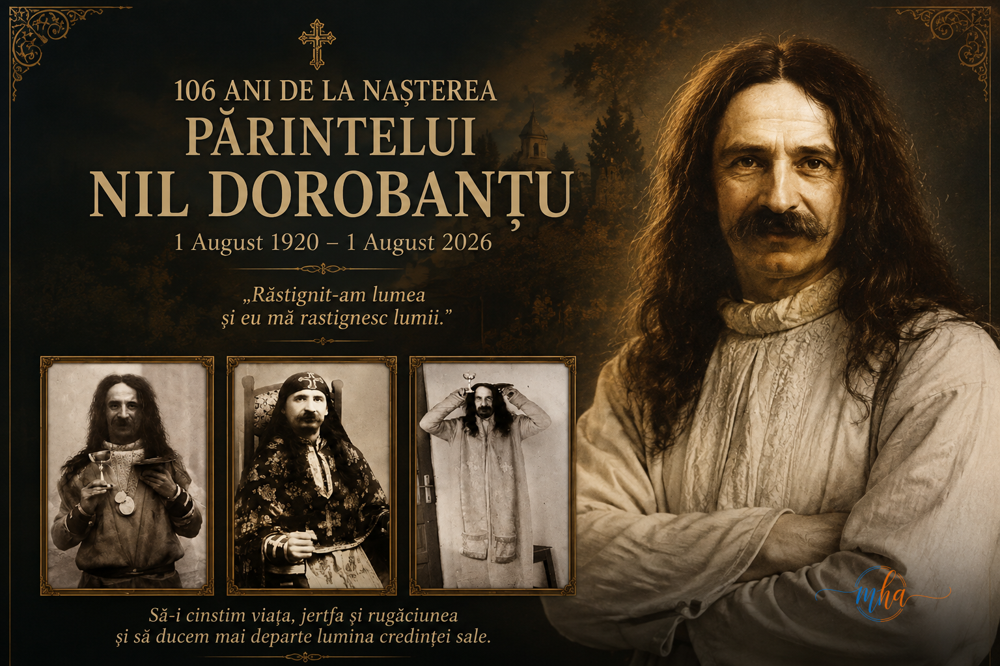
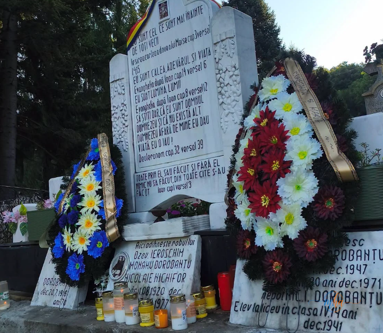
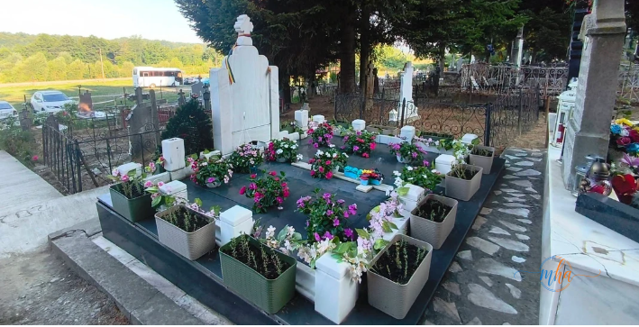

Sute de credincioși au participat ieri la comemorarea Părintelui Nil Dorobanțu, la Crainici. 106 ani de la nașterea unuia dintre cei mai cunoscuți mărturisitori ai credinței ortodoxe
Satul Crainici, din județul Mehedinți, a devenit ieri loc de pelerinaj pentru sute de credincioși veniți din toate colțurile țării, care au participat la slujba de pomenire organizată cu prilejul împlinirii a 106 ani de la nașterea Părintelui Nil Dorobanțu. Evenimentul religios a reunit preoți, monahi și pelerini care au dorit să cinstească memoria unuia dintre cei mai cunoscuți și controversați mărturisitori ai credinței ortodoxe românești din secolul trecut.
Într-o atmosferă de profundă rugăciune și reculegere, biserica din satul Crainici a fost neîncăpătoare pentru mulțimea de credincioși care au luat parte la Sfânta Liturghie și la slujba de pomenire oficiată în memoria Părintelui Nil Dorobanțu. După încheierea slujbei, pelerinii s-au îndreptat către mormântul părintelui, unde au aprins lumânări, au rostit rugăciuni și au adus flori în semn de respect și recunoștință.
Un părinte care a rămas în memoria credincioșilor
Născut la 1 august 1920, Părintele Nil Dorobanțu a fost ieroschimonah ortodox, stareț, duhovnic, ascet și mistic, fiind considerat de numeroși credincioși drept unul dintre marii mărturisitori ai Ortodoxiei românești.
Întreaga sa viață a fost caracterizată de o profundă trăire duhovnicească, de nevoință și de o credință neclintită în Dumnezeu, chiar și în cele mai grele momente ale existenței sale. În timpul regimului comunist, atunci când Biserica și credința erau supuse unor presiuni permanente, Părintele Nil Dorobanțu a continuat să mărturisească Evanghelia, asumându-și cu demnitate suferințele și persecuțiile.
Pentru această statornicie în credință, el a fost arestat și închis de mai multe ori, fiind urmărit constant de fosta Securitate. Deși în anul 1956 a fost caterisit, nu a încetat niciodată să-L slujească pe Dumnezeu. Potrivit mărturiilor celor care l-au cunoscut, Părintele Nil continua să săvârșească zilnic Sfânta Liturghie într-un mic paraclis amenajat într-un șopron din gospodăria părintească, transformând acel loc într-un adevărat altar al rugăciunii.
„Nebun pentru Hristos” – o alegere ascetică rar întâlnită
Un aspect care l-a făcut cunoscut în lumea ortodoxă a fost alegerea de a purta „haina nebuniei pentru Hristos”, o formă de nevoință ascetică extrem de rară în monahismul românesc.
Această cale spirituală presupune asumarea smereniei desăvârșite și renunțarea la orice formă de slavă omenească, urmând exemplul unor mari sfinți ai Bisericii. Pentru mulți credincioși, această alegere reprezintă dovada unei vieți dedicate în totalitate lui Dumnezeu și aproapelui.
Astăzi, viața și scrierile Părintelui Nil Dorobanțu continuă să fie studiate de numeroși teologi și credincioși interesați de spiritualitatea ortodoxă românească.
Deshumarea din 2015, un moment care a atras atenția credincioșilor
Un episod care continuă să fie intens discutat în rândul pelerinilor este cel din 28 septembrie 2015, când, în urma deshumării, sicriul Părintelui Nil Dorobanțu a fost găsit fără capac și fără oseminte.
Acest fapt a generat numeroase mărturii și interpretări în rândul credincioșilor, care îl consideră un eveniment deosebit. Totodată, este important de precizat că Biserica Ortodoxă Română nu a emis o poziție oficială prin care să interpreteze acest eveniment drept o minune, iar astfel de situații rămân în sfera convingerilor și mărturiilor personale ale credincioșilor.
Cu toate acestea, interesul față de viața și moștenirea spirituală a Părintelui Nil Dorobanțu a crescut semnificativ în ultimii ani, iar numărul pelerinilor care ajung la Crainici este în continuă creștere.
Crainici – un important loc de pelerinaj în Mehedinți
Începând cu anul 2016, la biserica din Crainici sunt organizate anual slujbe de pomenire dedicate Părintelui Nil Dorobanțu în două momente importante: 27 aprilie, ziua trecerii sale la Domnul, și 1 august, ziua nașterii sale.
Ieri, sute de credincioși din județul Mehedinți și din alte zone ale țării au participat la Sfânta Liturghie și la slujba de pomenire, transformând satul Crainici într-un adevărat loc de întâlnire al rugăciunii și credinței.
Mulți dintre pelerini au mărturisit că revin an de an pentru a se reculege la mormântul părintelui, considerând acest pelerinaj o sursă de întărire sufletească și de apropiere de Dumnezeu.
O moștenire spirituală care continuă să inspire
Pentru comunitatea din Crainici și pentru numeroșii credincioși care îi cinstesc memoria, Părintele Nil Dorobanțu rămâne un simbol al statorniciei în credință, al jertfei și al curajului de a mărturisi valorile creștine într-o perioadă în care acestea erau aspru încercate.
Comemorarea organizată ieri a reprezentat nu doar un moment de aducere aminte, ci și o invitație la reflecție asupra valorilor evanghelice, a puterii rugăciunii și a importanței păstrării credinței în orice împrejurare.
Prin astfel de evenimente, memoria Părintelui Nil Dorobanțu rămâne vie, iar satul Crainici își consolidează locul pe harta pelerinajelor religioase din România, atrăgând în fiecare an tot mai mulți oameni aflați în căutarea liniștii sufletești și a întăririi în credință.
Galerie foto


